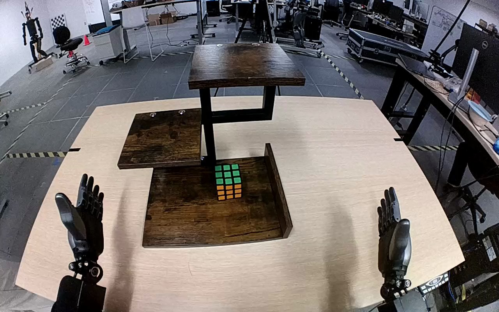

NVIDIA GR1 · 74
Video 74

Visual review action_review.json
{
"prompt_protocol": "humanoid_action_v1",
"prompt_provenance": "visually_authored_from_video_and_initial_frame",
"reviewed_contact_sheets": [
"sheet_001.jpg"
],
"inspected_frame_stride": 2,
"inspected_sampled_frame_count": 60,
"initial_scene": "A Rubik's cube with green upper face and orange front face stands on the lowest wooden shelf. Both robot hands are open in the foreground; the right arm subsequently performs the transfer.",
"observed_sequence": [
{
"start_frame": 0,
"end_frame": 18,
"action": "Both hands are open; cube remains upright on the bottom shelf.",
"confidence": "high"
},
{
"start_frame": 19,
"end_frame": 50,
"action": "Right arm extends inward to the cube, positioning open fingers around its sides while the left hand remains open and uninvolved.",
"confidence": "high"
},
{
"start_frame": 51,
"end_frame": 70,
"action": "Right fingers close around the cube, with thumb beneath/front and other fingers over the upper/opposite side; cube is secured for lifting.",
"confidence": "high"
},
{
"start_frame": 71,
"end_frame": 98,
"action": "Right hand lifts the cube clear of the bottom shelf and raises it on the right side toward the top shelf, maintaining the grasp.",
"confidence": "high"
},
{
"start_frame": 99,
"end_frame": 110,
"action": "Right hand moves the cube inward over the top shelf and lowers it upright onto the surface.",
"confidence": "high"
},
{
"start_frame": 111,
"end_frame": 119,
"action": "Cube remains upright on the top shelf while right fingers spread/open above it; right hand stays close above the cube at the final frame.",
"confidence": "high"
}
],
"arm_hand_roles": {
"right": "Active hand: encloses the cube, lifts from the lowest shelf, transports upward, sets upright on the top shelf, and opens fingers above it.",
"left": "Open and largely stationary throughout; does not contact the cube, shelf, or right hand.",
"coordination": "Single-hand transfer; no left-hand stabilization or hand-to-hand transfer."
},
"anatomical_side_evidence": "The camera looks forward over the robot’s paired forearms extending from the lower left and lower right of the view. The active forearm remains continuously connected to the lower-right body-side arm chain, and its thumb/palm orientation mirrors the idle left hand in the initial PNG, supporting robot-relative right-hand naming in this forward-facing egocentric view. The full torso/shoulders are outside the image.",
"terminal_state": "The cube stands upright on the top shelf. The right fingers have opened above the cube, but the hand has not fully withdrawn; the left hand remains open in the foreground.",
"uncertainties": [
"The top of the cube is partly occluded by the right hand at the ending, so complete separation of every finger from the cube cannot be established; no fully withdrawn hand state is shown."
],
"annotation_discrepancies": [],
"evidence_frame_indices": [
0,
42,
60,
70,
78,
98,
110,
116,
119
],
"selected_execution_status": "success",
"execution_status_basis": "The cube visibly leaves the bottom shelf and ends upright, supported on the top shelf, while the right fingers open. Complete hand withdrawal is not required or claimed.",
"inspection_coverage": "Viewed sheet_001.jpg containing every second source frame from 0 through 118, the source initial PNG at native resolution, and native frames 42, 60, 70, 78, 98, 110, 116, and 119 covering approach, grasp, lift, transport, shelf contact, finger opening, and final state.",
"video_id": "74",
"dataset": "NVIDIA_GR1_100",
"dedicated_review_agent": "review_gr1_74",
"review_source_video": "NVIDIA_GR1_100/74/original/original.mp4",
"source_frame_count": 120,
"source_fps": 20.0,
"native_detail_frames": [
0,
42,
60,
70,
78,
98,
110,
116,
119
],
"world_model_prompt": "The robot grasps the Rubik's cube on the bottom level of the wooden shelf with its right hand and lifts it clear. It carries the cube up to the top level, sets it upright on the shelf, and opens its fingers above the standing cube. Keep the camera fixed; preserve robot geometry, physically valid joint motion, and normal gripper opening and closing.",
"original_task_instruction": "Use the right hand to pick up rubik's cube from bottom level of the wooden shelf to top level of the wooden shelf.",
"selected_segment": {
"start_frame": 0,
"end_frame_exclusive": 120,
"reason": "Complete original single-task reference; no cropping or trimming requested."
},
"source_video_sha256": "135740da1c323d8c1ab69e6a53fb149324e7362a6852974a8f106467a03a9682",
"review_completed_at": "2026-10-13T18:30:52.303028+00:00"
}